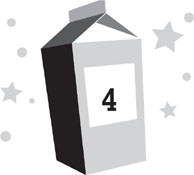

Lunar day 217
Breakfast time
“Blecch,” Violet said, spitting a hunk of chewed food onto her plate. “I hate waffles.”
“What are you talking about?” I asked her. “You liked waffles yesterday.”
My whole family was in the mess hall for breakfast. Mom, Dad, and I were dressed in our usual moon base clothing: shorts and T-shirts. Violet was still wearing her pink unicorn pajamas.
“No,” Violet insisted sternly. “I never liked waffles.”
“You sang a whole song about how much you liked them,” I pointed out.
“I like bacon,” Violet replied. As if that was an argument.
In truth, I couldn’t blame her for hating the waffles. Nobody liked the waffles at Moon Base Alpha. Or most of the other food, for that matter. Everything we ate at MBA had once been actual edible things, but then they’d all been precooked, irradiated, thermostabilized, dehydrated, and compacted into little cubes of disgustingness. And if that weren’t bad enough, we had to rehydrate it all with water reclaimed from our own urine.
For this reason, most Moonies didn’t spend much time in the mess hall. They wolfed their food down as fast as possible, the idea being that the less time it was in your mouth, the less time you had to taste it.
Violet hadn’t quite grasped this concept, though. Or the fact that there were certain foods that would never show up at MBA, no matter how much she wanted them.
“There is no bacon,” Dad told her. “They don’t have it on the moon.”
“But I waaaant it,” Violet pleaded.
“How about blueberry muffins instead?” Mom asked.
“Okay!” Violet instantly returned to her usual perky self, having forgotten all about bacon, and began to sing a song about how much she liked blueberry muffins. Violet was normally so cheerful, it was like living with an animated cartoon character, right down to breaking into song at random moments.
“Good,” Mom said. “Let’s go get some.”
The two of them headed across the mess to dump Violet’s waffles and get some muffins, which weren’t really muffins at all, but more like muffin-flavored substance cubes.
At the other tables in the mess were the Brahmaputra-Marquez family—except for Roddy—the Goldstein-Iwanyi family, and Kira Howard, the only girl at MBA my age, who was eating with her father. As usual, Kira’s father, Maxwell, wasn’t paying much attention to her. He was staring at his fork, lost in thought. As one of the main engineers for Moon Base Beta, he was constantly coming up with things to improve; at the moment, he was probably thinking of a better eating utensil. Kira’s mother had passed away several years earlier; with her father’s mind constantly somewhere else, it was sometimes like she didn’t have any parents at all.
Kira was tapping at a SlimScreen tablet while she ate, probably coding. Kira was talented with computers, and she filled the long gaps of free time at MBA with hers. She’d developed several programs to improve life at MBA. Some were beneficial to everyone—like an oxygen-monitoring system for the air locks—although most were just for fun. My favorite allowed us to simulate a transmission failure during our school classes, which we could use to cut off our teachers back on earth if they ever tried to spring a pop quiz on us.
The Sjobergs, the only other family on the moon, were nowhere to be seen. The other Moonies didn’t have kids and were probably eating at their workstations. This was usually the case, which was why no one had noticed that Nina was missing yet. Everyone probably figured she was somewhere else at MBA, taking care of something important.
Kira looked up from her tablet and waved to me.
“You can go sit with her if you want,” Dad told me. “I won’t be offended.”
“I’m fine here,” I said. “I’ll spend the whole day with her in school.”
Dad poured Tabasco sauce onto his reconstituted eggs. Like many Moonies, Dad put Tabasco sauce on almost everything. Even stuff it shouldn’t have been on. Like pancakes. It was one of the only ways to give the rehydrated food flavor. “I really like Kira,” Dad told me. “I’m glad she’s up here with us.”
I shrugged. “Yeah. Me too, I guess.”
“You guess?” Dad repeated. “You’ve seemed a whole lot happier since she got here, now that you have someone else to hang out with besides Roddy.”
Dad was right. Kira was a lot more fun than Roddy, and I did really like her as a friend. But her presence at MBA was also a little awkward for me. All us Moonies have lots of fans back on earth—they usually call themselves “Moonatics”—and shortly after Kira arrived, it seemed as though every one of them had decided that we ought to be a couple. This wasn’t because any of those Moonatics really knew us; it was because we were a boy and a girl, we were the same age, and there weren’t any other options. It was a Noah’s ark kind of thing. There were thousands of gossip sites that claimed we were going to become a couple any day—while thousands of others claimed we were already dating. (I think I was chosen over Roddy because he was an oddball and the public didn’t like him as much as me.) While I liked Kira as a friend, the idea of dating her seemed kind of weird; we were only twelve, after all. And yet, sometimes, it seemed that even our fellow Moonies—including my parents—felt we should be going out.
“I wonder where Roddy is,” I said, trying to change the subject.
“Bet you a million dollars he’s playing virtual-reality games,” Dad replied. “If you want to find out what he saw last night, you’re going to have to jack in.”
“Great,” I grumbled, then forced down a forkful of space eggs and flushed my mouth with a swig of orange-flavored water.
Beyond Dad, I could see into the greenhouse, which was a large atrium in the center of MBA across from the mess hall. The biggest window in all of the base was in the roof, allowing sunlight to spill down through it, illuminating the plants inside. Dr. Shari Goldstein, the lunar-agriculture specialist, was already at work. Despite her name, Dr. Goldstein was actually mostly of Chinese descent; everyone in her family had been Asian except her paternal great-grandfather. Normally, she was one of the more cheerful people at MBA, though she sometimes got too invested in her plants, as though they were pets. That morning, she seemed extremely distraught over a sick-looking squash plant. Its leaves had turned brown and she was now cradling it in her arms and crying.
Thankfully, most of the other plants in the greenhouse were doing far better than the squash. They hadn’t grown nearly as well as NASA had hoped, but Dr. Goldstein had been having some success lately. The rumor was that she’d upped the amount of our own recycled poop she was using in the fertilizer. It was disgusting but effective. Around Dr. Goldstein, I could see the bright red fruits of a few dozen precious strawberries, as well as some tomatoes ripening on the vine. No one had been allowed to eat any of them yet; they were being saved so that everyone on the base could share them at the peak of flavor. In the meantime, it was torturous to look at them while trying to swallow rehydrated space eggs. I was dying for a taste of fresh strawberry. And while I hadn’t been a big fan of tomatoes back on earth, now merely looking at them made my mouth water like Niagara Falls.
“How many more days do you think it’ll be until the berries are ready?” I asked.
Dad glanced back over his shoulder at them. “They look awfully ripe. I’m sure it won’t be much longer.”
“They looked good to me two days ago.”
Dad laughed. “Shari knows what she’s doing. We wouldn’t want to wait all this time and then eat them before they were ready.”
“I wouldn’t care. An unripe berry would be a billion times better than this.” I shoved my eggs away, unable to stomach another bite.
“Shari’s making a lot of progress,” Dad told me. “Hopefully, pretty soon we’ll be eating fresh fruit a lot more often. And the greenhouse at Moon Base Beta is going to be thirty times the size of this one. Once that’s built, there’ll be fresh food all the time.”
“That’ll be like ten years from now.”
“It’s scheduled to be done much sooner than that.”
“If there aren’t any construction delays. Which there will be. I’ll bet we’ll be back on earth before they even start building MBB.”
Dad didn’t argue the point, which probably meant he thought the same thing. Instead he asked, “When’d you get so cynical?”
“Since I moved to this fabulous location.” I gestured with false excitement to the rest of MBA. “I promise, when we get back home, I will never complain about eating my vegetables again.”
“I’m going to hold you to that,” Dad said.
My watch buzzed, indicating a text had come in. I glanced at it, knowing it wouldn’t be from any of my friends back in Hawaii. There was no real day or night on the moon—the sun was overhead hundreds of hours at a time—so MBA kept to a twenty-four-hour schedule synced to Central Standard Time and Mission Control in Houston. Hawaii was five hours behind, meaning it was still nighttime there.
The text was from Dr. Levinson, my math teacher back on earth, alerting me that our class on the ComLink that day was going to be delayed fifteen minutes. All teachers at MBA taught our classes remotely from earth, and most weren’t merely teachers; they were NASA scientists who spent a few hours a week educating us for extra pay.
“That’s strange,” Dad observed. “I thought Nina was shutting down your ComLink access.”
I stared at him, realizing he was right. All texts came via ComLink. “She said I’d be able to use it for school, though.”
“I thought she only meant for class,” Dad pointed out. “Any texts would probably still be blocked.”
“Let’s see.” I opened the message center on my watch. I hadn’t bothered checking it that morning because it wasn’t supposed to be working. Instead, it was. I had sixty-five texts in my folder. The first was from Riley Bock, who’d probably sent it long after I’d gone to sleep. “Yeah, there’s messages.”
“What’s going on?” Mom asked, sitting back down with Violet, who was happily devouring blueberry muffin cubes and singing about blueberries with her mouth full.
“Nina never shut down Dash’s ComLink,” Dad said.
“Oh.” Mom seemed pleasantly surprised. “Maybe she had a change of heart about it.”
“I didn’t know Nina had a heart,” Dad said, keeping his voice low so no one else would hear.
“I love blueberries!” Violet sang. “They’re delicious and nutritious and malicious!”
“ ‘Malicious’ means ‘evil,’ ” I told her.
“There could be evil blueberries,” Violet shot back. “Blueberries who try to take over the world so that no one eats them anymore. Luckily, I can defeat them!” She crammed a blueberry cube into her mouth and made a show of crushing it with her teeth.
I turned back to my parents. Our food was disgusting enough without having to see Violet chewing it with her mouth open. “You really think Nina changed her mind? Because she seemed awfully determined to punish me.”
“Maybe she was only making a show of punishing you,” Mom suggested. “So the Sjobergs would think she was doing it and be satisfied.”
“I don’t know,” I said skeptically. “That sounds awfully human for Nina.”
“Don’t question it,” Dad advised me. “Just be happy you’re still on the Link.”
“Know who else likes blueberries?” Violet announced suddenly. “DeeDah!”
“Who’s DeeDah?” Mom asked, humoring her.
“She’s my new friend!” Violet grinned. Her teeth were stained purple with blueberry.
“Oh?” Dad asked. “Where’s she from?”
“Here,” Violet replied. “She lives in the bathroom.”
Dad and Mom looked at each other and tried not to laugh. They always found Violet’s stories amusing. “Is DeeDah a little girl like you?” Mom asked.
“Oh no,” Violet said seriously. “She’s a walrus.”
Mom and Dad couldn’t keep their straight faces any longer and cracked up. “Oh, Violet,” Mom giggled, tousling my sister’s hair. “You’re such a goofball.”
I forced down the last of my breakfast and stood. “I’m going to see if I can find Roddy and talk to him before school starts.”
“All right.” Mom blew me a kiss. “You know where to find us.”
I took my plates to the cleaning station, then headed out of the mess hall. I could have just stopped by the Brahmaputra-Marquez family table to ask where Roddy was, but then I would have had to talk to them. Dr. Brahmaputra-Marquez and Inez were nice, but Cesar was a jerk and Dr. Marquez, our base psychiatrist, was always trying to psychoanalyze everyone else even though he was the looniest person at MBA. He had hundreds of weird tics; at the moment, he was sticking his pinky finger into his nostril so deep it looked like he might poke himself in the brain. One of the biggest problems with living on a moon base is that you’re stuck with your fellow Moonies no matter what. So I took any chance I could to avoid the ones I didn’t care for.
“Where are you going?” Kira asked as I walked past.
“To talk to Roddy.”
Kira jokingly faked a shudder of disgust. “Why would you do that?”
“He had something to do with why Patton tried to beat me up last night.”
“Oh. I heard about that. Nice move with the Urinator.”
“Thanks.”
“See you in class.”
“You too,” I said.
As I left the mess hall, I gave Dr. Goldstein a friendly wave through the greenhouse window, hoping it might lift her spirits, but she was too distraught over her sick squash to even notice me. My route to the rec room then took me past the science pod. Sure enough, most of the adults at MBA were already at their workstations: Dr. Janke in astrobiology, Dr. Kowalski in chemistry, Dr. Balnikov in astrophysics, Dr. Kim and Dr. Alvarez in geology. Dr. Daphne Merritt, the base roboticist, was also in her office, right by the air lock, examining something on her computer.
As Dad had guessed, Roddy was already in the rec room, playing virtual-reality games. This wasn’t an amazing deduction on Dad’s part. Roddy was almost always playing virtual-reality games; sometimes he logged as much as fourteen hours a day. Now he was obviously trying to squeeze in some time before school. A set of hologoggles was strapped over his eyes, and his hands were sheathed in sensogloves. He was whirling around madly, pausing now and then to pounce forward with a stabbing motion. I assumed this meant he was having an imaginary battle, though to me it looked like he was dancing ballet with a bad case of stomach cramps. One of the big problems with veeyar games is that no matter how cool you looked inside the game, you always looked like an idiot to anyone watching you play it from the outside.
“Roddy!” I shouted, so he could hear me over the game’s audio. “It’s Dash! Can you talk?”
“Sure!” Roddy made a pirouette and stabbed an invisible enemy beside me. “Jack in! I could use some backup.”
“All right.” I didn’t really want to jack in, but I had little choice. I needed to find out what Roddy knew. So I slipped on some sensogloves, strapped on some hologoggles, and fired them up. There was a flash of light, and then I was plunged into a world even more bizarre than I’d imagined.